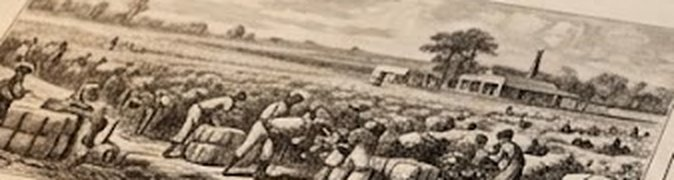

TheSouthern Gazette
El imperio del algodón se expande

Los hacendados del Sur celebran otra temporada de récord. Cada jornada, los campos de Oak Ridge y de las plantaciones vecinas envían carretas cargadas de fardos hacia el puerto, donde las barcazas esperan para llevarlos a los telares del Norte y de Inglaterra.
Detrás de cada fardo hay jornadas de recolección, herrería y diques bajo el mismo régimen forzado. El precio del algodón, sin embargo, sigue cayendo: 9,3 centavos por libra, lejos de los 17 de 1820.
Fletes de Oak Ridge
Salidas de carretas al alba. Inspección de manifiestos en el muelle principal.
Fletes marítimos y suministros
Se buscan estibadores para el Almacén Central de Acopio. Pago por jornada.
Cotizaciones del algodón
| 1820 | 17,0 ¢ |
| 1823 | 13,8 ¢ |
| 1826 | 10,2 ¢ |
| 1829 | 9,3 ¢ |
Centavos por libra en el puerto de Mobile.
En el muelle, los capataces de Oak Ridge reportan la huida de un trabajador de la herrería. Las patrullas de caminos han doblado sus rondas.
Piratería fluvial y redes clandestinas
Robos de cargamentos en el río
Las pérdidas en el puerto alarman a los terratenientes. Barcazas que zarpan cargadas llegan vacías a la bahía y nadie sabe explicar cómo.
«El Fantasma del Río»
Así llaman en las tabernas al hombre que, según los rumores, dirige una red de contrabando desde el Callejón del Humo. El sheriff ofrece recompensa a quien entregue información.
Se ruega a los ciudadanos informar de cualquier movimiento sospechoso en los canales secundarios.